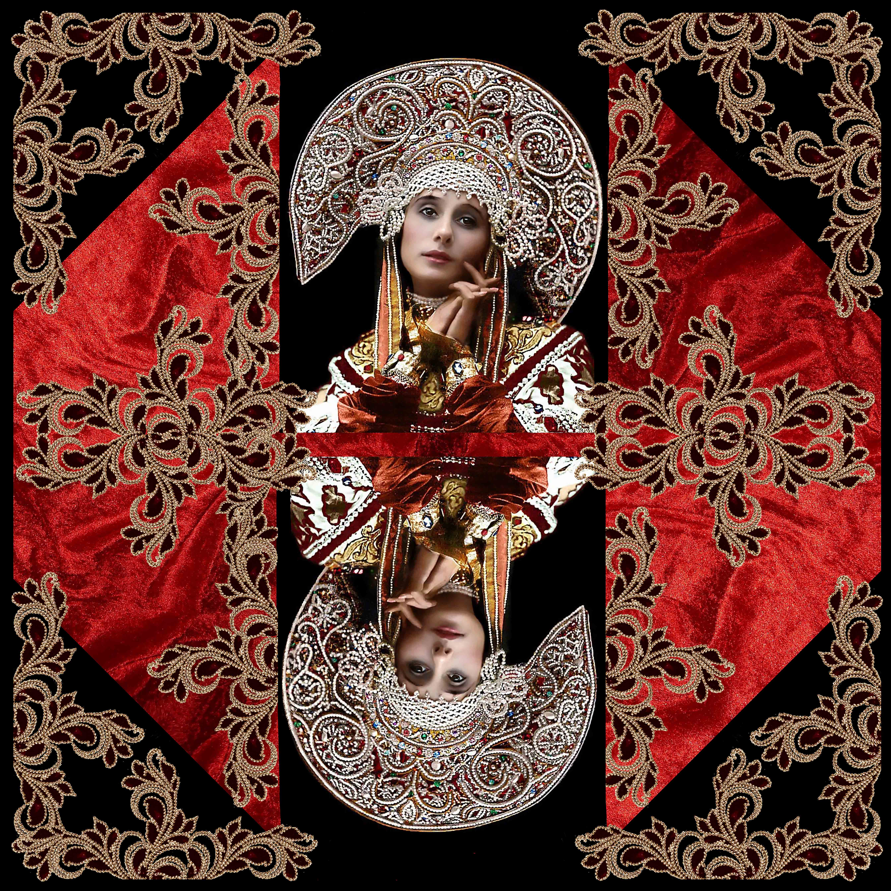
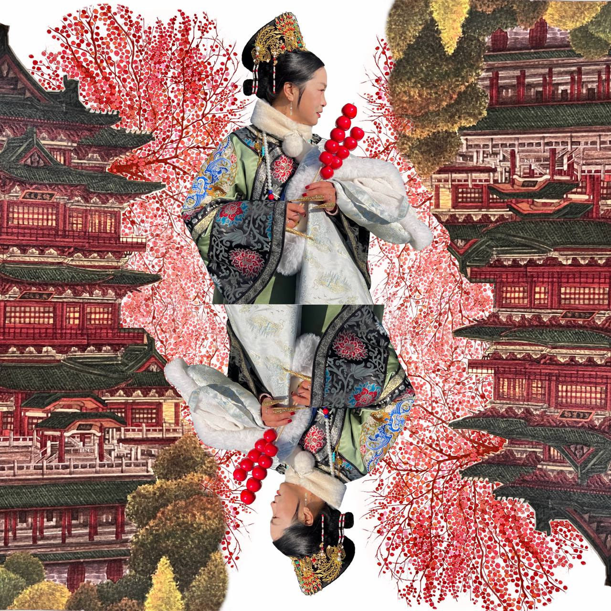
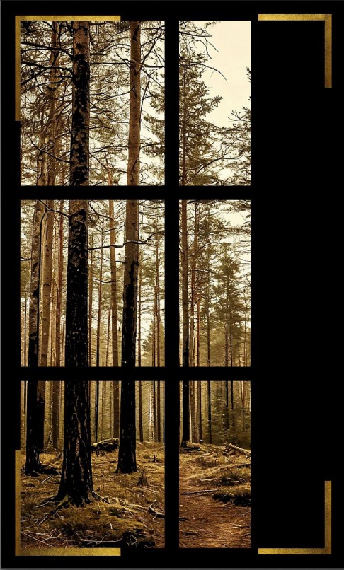

Коллекция «Алая лента»

Коллекция «Алая лента» представляет собой изысканное собрание шелковых декоративных панно, где благородный красный цвет раскрывается в различных оттенках и фактурах.
Глубокие, насыщенные тона красного в сочетании с тонкой текстурой материала создают ощущение тепла и роскоши, превращая каждое панно в настоящий шедевр декоративного искусства.
Эти произведения привносят в интерьер элегантность и утончённость, становясь центральным элементом любого пространства.

Музейная коллекция

Представляем коллекцию шёлковых декоративных панно «Музейная коллекция» — где традиции высокого искусства встречаются с современным дизайном.
Каждое панно создано как подлинный экспонат: благородные оттенки от глубокого бордового до золотого, изысканная фактура натурального шёлка и виртуозное исполнение превращают интерьер в галерею утончённой красоты.
«Музейная коллекция» не просто украшает пространство — она рассказывает историю, наполняет дом атмосферой вечных ценностей и становится смысловым центром любого интерьера.
Погрузитесь в мир изысканного декора — откройте для себя «Музейную коллекцию»!


Коллекция «Окно в Азию»

Коллекция «Окно в Азию» — это путешествие сквозь культурные традиции и художественные образы Азии, воплощённые в изысканном шёлке. Каждое панно — тонкая работа, сочетающая древние техники живописи и современное художественное видение.
В коллекции представлены сюжеты, вдохновлённые природой, мифологией и бытом разных азиатских стран: от туманных гор Китая и цветущих садов Японии до ярких базаров Средней Азии и величественных храмов Индии. Игра цвета, плавные линии и богатая фактура шёлка передают особую атмосферу Востока — загадочную, гармоничную и полную глубокого символизма.
Коллекция «Свет тишины»

Коллекция «Свет тишины» — это диалог с тишиной, воплощённый в благородном шёлке.
Каждое полотно — словно кадр из сновидения, где окно становится порталом в мир умиротворения. Лёгкие блики на шёлковой поверхности имитируют игру света и тени, падающих через оконные переплёты. Нежные пастельные тона — дымчато‑серый, перламутрово‑белый, создают ощущение утренней дымки или сумерек.
Шёлк коллекции обладает особой текучестью и благородным матовым блеском, который подчёркивает глубину рисунка.